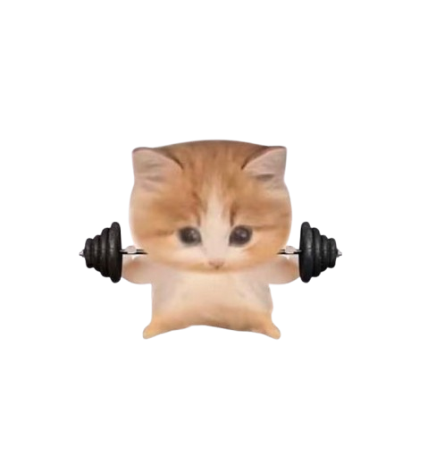
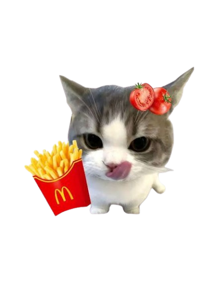
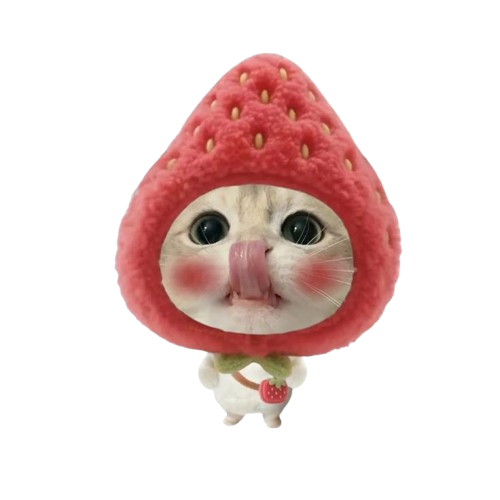
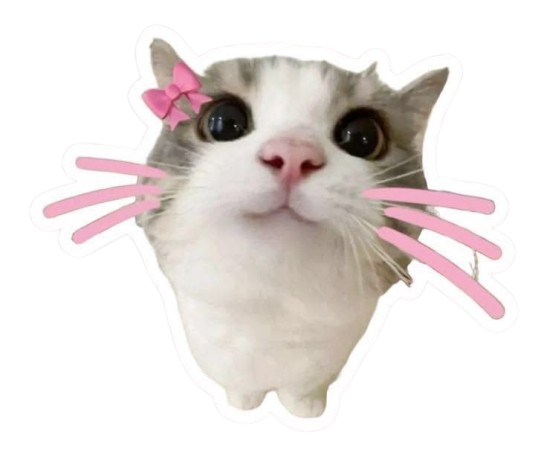
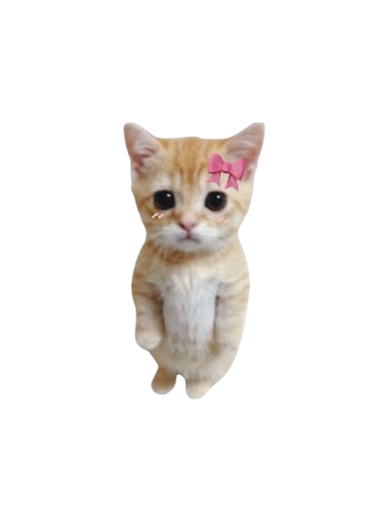
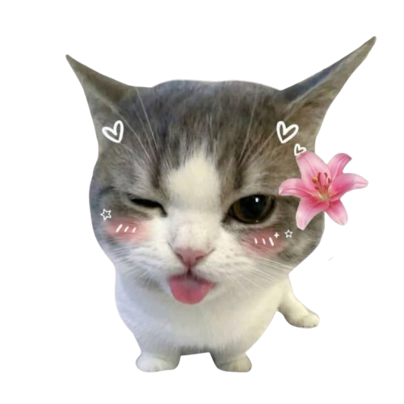
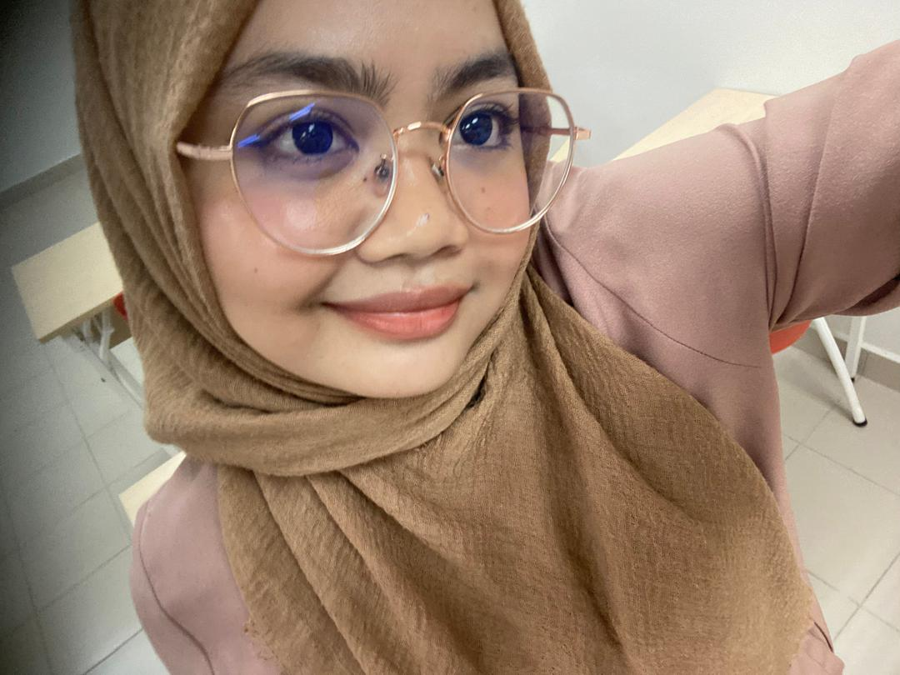
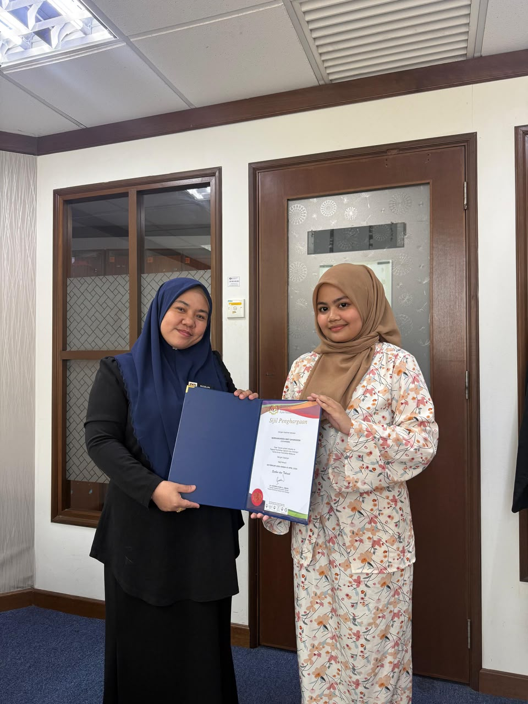
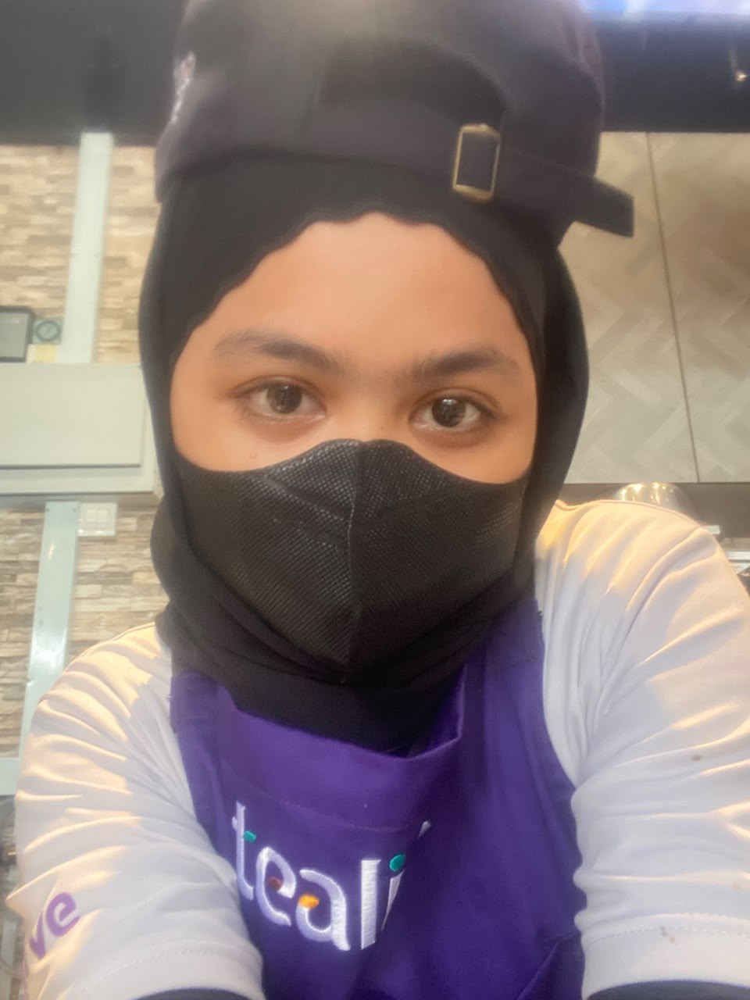

Diploma in Information Management Student & Aspiring Data Analyst
Dive More
| Name | Nurkhairunnisa binti Saharuddin |
| Age | 21 Years Old |
| Place of Birth | Selangor |
| Hobby | Writing |
| Ambition | Data Analyst |
A dedicated 21-year-old Information Management student at UiTM Rembau with a strong interest in information management and information technology.
Completed internship training at PPD Hulu Selangor, where I gained practical experience in document handling, records organization, data entry, and administrative support.
Possessing strong organizational, communication, and problem-solving skills, I am eager to further develop professional competencies, gain industry exposure, and contribute positively to a dynamic work environment.
Universiti Teknologi MARA
2023 - Present
Currently pursuing a Diploma in Information Management with knowledge in records management, database systems, web development, and information organization.
SMK Kuala Kubu Bharu
2018 - 2022
Studied Computer Science, Home Science, and Business studies while developing knowledge in technology and entrepreneurship.

Management Unit Intern

Current favorite track item on rotation.
A heartwarming story about friendship and memories.
Standby tissues before watching! 🐾
Email: niss442@gmail.com
WhatsApp: Chat Me
Phone: 011-39931232